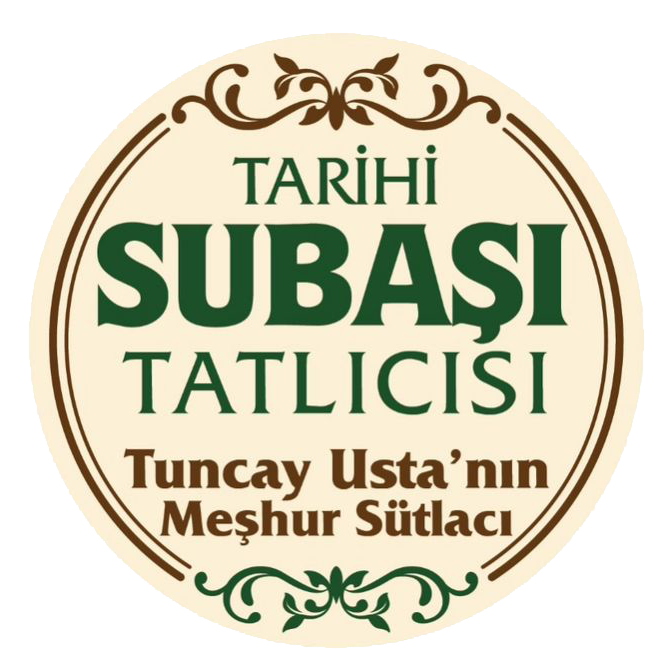

Tarihi Subaşı Tatlıcısı
Meşhur Tuncay Usta Sütlacı
Meşhur Tatlılarımız
Sütlaç
120 TL
Sütlaç (Paket)
140 TL
Baklava
300 TL
Tulumba
250 TL
Atıştırmalıklar
Tost
150 TL
Sebzeli Tost
175 TL
Sandviç
175 TL
Sıcak İçecekler
Çay
20 TL
Türk Kahvesi
100 TL
Nescafe
60 TL
Soğuk İçecekler
Su
10 TL
Soda
20 TL
Meyveli Soda
25 TL
Cola
60 TL
Didi
50 TL
Dimes
20 TL
Dimes (Teneke)
40 TL